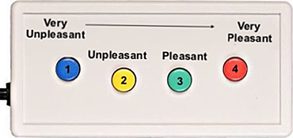

<!DOCTYPE html>
<html>
  <head>
    <title>Welcome (I-FAD)</title>
    <script src="https://unpkg.com/jspsych@7.1.2"></script>
    <script src="https://unpkg.com/@jspsych/plugin-html-keyboard-response@1.1.0"></script>
    <script src="https://unpkg.com/@jspsych/plugin-image-keyboard-response@1.1.0"></script>
    <script src="https://unpkg.com/@jspsych/plugin-preload@1.1.0"></script>
    <link href="https://unpkg.com/jspsych@7.1.2/css/jspsych.css" rel="stylesheet" type="text/css" />
    <link rel="stylesheet" href="my_experiment_style_MRI.css">
    <script src="./lib/taskflow/client.js"></script>
  </head>
  <body></body>
  <script>
/* TASK INFO: implicit FAD task 4 blocks, 1 per condition, no practice trials; alternative order to implicitFAD-ampsuic.html */

    /* initialize jsPsych */
    var jsPsych = initJsPsych({
        on_finish: async function() {

          if (window.location !== window.parent.location) {
            // running on server so send data to the server
            var measure = await TaskFlow.Client.Measure.get();
            // get data out of jspsych
            var task_data = JSON.stringify(jsPsych.data.get().values());
            measure.complete = true;
            measure.json = task_data;
            // sync measure with server
            await TaskFlow.Client.Measure.set(measure);
            // continue on!
            TaskFlow.Client.Measure.end();
          } else {
            // running local
            // display the data
            jsPsych.data.displayData();
          }
        }
    });

    /* create timeline */
    var timeline = [];

    /* preload images */
    var preload = {
      type: jsPsychPreload,
      images: ['img/key.png','sdvp/3068.jpg', 'sdvp/6570.jpg', 'sdvp/SDVPS_1.jpg', 'sdvp/SDVPS_2.jpg', 'sdvp/SDVPS_3.jpg', 'sdvp/SDVPS_4.jpg', 'sdvp/SDVPS_5.jpg', 'sdvp/SDVPS_6.jpg', 'sdvp/SDVPS_7.jpg','sdvp/SDVPS_8.jpg','sdvp/symbol1.jpg','sdvp/symbol2.jpg', 'sdvp/symbol3.jpg','sdvp/symbol4.jpg','sdvp/symbol5.jpg','sdvp/symbol6.jpg','sdvp/symbol7.jpg', 'sdvp/symbol8.jpg', 'sdvp/symbol9.jpg','sdvp/symbol10.jpg','sdvp/symbol11.jpg', 'sdvp/symbol12.jpg','sdvp/symbol13.jpg', 'sdvp/symbol14.jpg', 'sdvp/symbol15.jpg', 'sdvp/symbol16.jpg', 'sdvp/symbol17.jpg','sdvp/symbol18.jpg', 'sdvp/symbol19.jpg', 'sdvp/symbol20.jpg','sdvp/symbol21.jpg','sdvp/symbol22.jpg','sdvp/symbol23.jpg','iaps_neg/1525.jpg', 'iaps_neg/2345_1.jpg','iaps_neg/3150.jpg','iaps_neg/3170.jpg','iaps_neg/7380.jpg','iaps_neg/9140.jpg','iaps_neg/9184.jpg','iaps_neg/9301.jpg','iaps_neg/9326.jpg','iaps_neg/9611.jpg','iaps_neg/9903.jpg','iaps_pos/1463.jpg','iaps_pos/1811.jpg','iaps_pos/2071.jpg','iaps_pos/2154.jpg','iaps_pos/4610.jpg','iaps_pos/5480.jpg','iaps_pos/5829.jpg','iaps_pos/7400.jpg','iaps_pos/7492.jpg','iaps_pos/8380.jpg','iaps_pos/8503.jpg', 'iaps_neut/6150.jpg','iaps_neut/7001.jpg','iaps_neut/7002.jpg','iaps_neut/7009.jpg','iaps_neut/7026.jpg','iaps_neut/7052.jpg','iaps_neut/7055.jpg','iaps_neut/7080.jpg','iaps_neut/7100.jpg','iaps_neut/7150.jpg','iaps_neut/7705.jpg','sdvp/symbol24.jpg','sdvp/symbol25.jpg','sdvp/symbol26.jpg','sdvp/symbol27.jpg','sdvp/symbol28.jpg','sdvp/symbol29.jpg','sdvp/symbol30.jpg','sdvp/symbol31.jpg','sdvp/symbol32.jpg','sdvp/symbol33.jpg','sdvp/symbol34.jpg','sdvp/symbol35.jpg','sdvp/symbol36.jpg','sdvp/symbol37.jpg','sdvp/symbol38.jpg','sdvp/symbol39.jpg','sdvp/symbol40.jpg','sdvp/symbol41.jpg','sdvp/symbol42.jpg','sdvp/symbol43.jpg']
    };
    timeline.push(preload);

     /* define welcome message trial */
     var welcome = {
      type: jsPsychHtmlKeyboardResponse,
      stimulus: " <p>Welcome to the Modified Affect-Misattribution Task! </p> <p>Press any button for instructions. </p>"
    };
    timeline.push(welcome);

    /* define instructions trial */
    var instructions = {
      type: jsPsychHtmlKeyboardResponse,
      stimulus: `
        <p>In this task, an image will appear on the screen followed by a symbol.</p><p>Using the response pad, please rate <strong>HOW PLEASANT a SYMBOL is</strong>, as quickly as you can. </p>
        <p>Try to focus on rating the symbol.</p>
        <p>Press any button to continue.</p>
      `,
      post_trial_gap: 1000
    };
    timeline.push(instructions);
    var instructions2 = {
      type: jsPsychHtmlKeyboardResponse,
      stimulus: `
       <p>If the symbol is...</p> <p><strong>Very unpleasant</strong>, press the button 1</p>
        <p><strong>Unpleasant</strong>, press the button 2</p>
        <p><strong>Pleasant</strong>, press the button 3</p>
        <p><strong>Very pleasant</strong>, press the button 4.</p>
       <p> </div>
        </p>
        <p>Press any button to continue.</p>
      `,
      post_trial_gap: 1000
    };
    timeline.push(instructions2);
/*questions for the examiner*/
var questions = {
      type: jsPsychHtmlKeyboardResponse,
      stimulus: "<p>If you have questions or concerns, please signal to the examiner. </p> <p>If not, press any button to continue. </p>"
    };
    timeline.push(questions);

/*define trial awaiting for the scanner keyboard button #5 */
var MRIstart ={
  type: jsPsychHtmlKeyboardResponse,
  stimulus: "<p> Please wait while the scanner starts up. This will take 10 seconds. </strong></p>",
  choices: ['5'],
 prompt: "<p> A cross (+) will appear when the task starts. </p>",
 data: {
    task: 'response'},
    on_finish: function(data){
    data.response;
 }
};
timeline.push(MRIstart);
    /* define test trial stimuli array */
 var test_stimuli =[    
        {stimulus:'iaps_neut/6150.jpg',symbol: 'sdvp/symbol33.jpg'},
        {stimulus:'iaps_neut/7001.jpg',symbol: 'sdvp/symbol34.jpg'},
        {stimulus:'iaps_neut/7002.jpg',symbol: 'sdvp/symbol35.jpg'},
        {stimulus:'iaps_neut/7009.jpg',symbol: 'sdvp/symbol36.jpg'},
        {stimulus:'iaps_neut/7026.jpg',symbol: 'sdvp/symbol37.jpg'},
        {stimulus:'iaps_neut/7052.jpg',symbol: 'sdvp/symbol38.jpg'},
        {stimulus:'iaps_neut/7055.jpg',symbol: 'sdvp/symbol39.jpg'},
        {stimulus:'iaps_neut/7080.jpg',symbol: 'sdvp/symbol40.jpg'},
        {stimulus:'iaps_neut/7100.jpg',symbol: 'sdvp/symbol41.jpg'},
        {stimulus:'iaps_neut/7150.jpg',symbol: 'sdvp/symbol42.jpg'},
        {stimulus:'iaps_neut/7705.jpg',symbol: 'sdvp/symbol43.jpg'},

        {stimulus:'sdvp/3068.jpg', symbol: 'sdvp/symbol1.jpg'},
        {stimulus:'sdvp/6570.jpg',symbol: 'sdvp/symbol2.jpg'},
        {stimulus:'sdvp/SDVPS_1.jpg',symbol: 'sdvp/symbol3.jpg'},
        {stimulus:'sdvp/SDVPS_2.jpg', symbol: 'sdvp/symbol4.jpg'},
        {stimulus:'sdvp/SDVPS_3.jpg',symbol: 'sdvp/symbol5.jpg'},
        {stimulus:'sdvp/SDVPS_4.jpg',symbol: 'sdvp/symbol6.jpg'},
        {stimulus:'sdvp/SDVPS_5.jpg',symbol: 'sdvp/symbol7.jpg'},
        {stimulus:'sdvp/SDVPS_6.jpg',symbol: 'sdvp/symbol8.jpg'},
        {stimulus:'sdvp/SDVPS_7.jpg',symbol: 'sdvp/symbol21.jpg'},
        {stimulus:'sdvp/SDVPS_8.jpg',symbol: 'sdvp/symbol22.jpg'},

        {stimulus:'iaps_neg/1525.jpg',symbol: 'sdvp/symbol9.jpg'},
        {stimulus:'iaps_neg/2345_1.jpg',symbol: 'sdvp/symbol10.jpg'},
        {stimulus:'iaps_neg/3150.jpg',symbol: 'sdvp/symbol11.jpg'},
        {stimulus:'iaps_neg/3170.jpg',symbol: 'sdvp/symbol12.jpg'},
        {stimulus:'iaps_neg/7380.jpg',symbol: 'sdvp/symbol13.jpg'},
        {stimulus:'iaps_neg/9140.jpg',symbol: 'sdvp/symbol14.jpg'},
        {stimulus:'iaps_neg/9184.jpg',symbol: 'sdvp/symbol15.jpg'},
        {stimulus:'iaps_neg/9301.jpg',symbol: 'sdvp/symbol16.jpg'},
        {stimulus:'iaps_neg/9326.jpg',symbol: 'sdvp/symbol17.jpg'},
        {stimulus:'iaps_neg/9611.jpg',symbol: 'sdvp/symbol18.jpg'},
        {stimulus:'iaps_neg/9903.jpg',symbol: 'sdvp/symbol19.jpg'},

        {stimulus:'iaps_pos/1463.jpg',symbol: 'sdvp/symbol20.jpg'},
        {stimulus:'iaps_pos/1811.jpg',symbol: 'sdvp/symbol23.jpg'},
        {stimulus:'iaps_pos/2071.jpg',symbol: 'sdvp/symbol24.jpg'},
        {stimulus:'iaps_pos/2154.jpg',symbol: 'sdvp/symbol25.jpg'},
        {stimulus:'iaps_pos/4610.jpg',symbol: 'sdvp/symbol26.jpg'},
        {stimulus:'iaps_pos/5480.jpg',symbol: 'sdvp/symbol27.jpg'},
        {stimulus:'iaps_pos/5829.jpg',symbol: 'sdvp/symbol28.jpg'},
        {stimulus:'iaps_pos/7400.jpg',symbol: 'sdvp/symbol29.jpg'},
        {stimulus:'iaps_pos/7492.jpg',symbol: 'sdvp/symbol30.jpg'},
        {stimulus:'iaps_pos/8380.jpg',symbol: 'sdvp/symbol31.jpg'},
        {stimulus:'iaps_pos/8503.jpg',symbol: 'sdvp/symbol32.jpg'},

      ]
    var fixation = {
  type: jsPsychHtmlKeyboardResponse,
  stimulus: '<div style="font-size:60px;">+</div>',
  choices: "NO_KEYS",
  trial_duration: 1000,
  data: {
    task: 'fixation'
  }
};
var test = {
  type: jsPsychImageKeyboardResponse,
  stimulus: jsPsych.timelineVariable('stimulus'),
  choices: "NO_KEYS",
 trial_duration: 75,
 post_trial_gap: 125,
 stimulus_height: 650,
  maintain_aspect_ration: true,
 };
 var symbol = {
  type: jsPsychImageKeyboardResponse,
  stimulus: jsPsych.timelineVariable('symbol'),
  choices: "NO_KEYS",
  trial_duration: 100,
};
var response = {
  type: jsPsychHtmlKeyboardResponse,
  stimulus: "<p>How would you rate that symbol?</p>",
  choices: ['1', '2', '3','4'],
  trial_duration: 3000,
  response_ends_trial: false,
 data: {
    task: 'response'},
    on_finish: function(data){
    data.response;
 }
};
    var test_procedure = {
      timeline: [fixation, test, symbol, response],
      timeline_variables: test_stimuli,
      repetitions: 1,
      randomize_order: false,
      post_trial_gap: 500,
    };
    timeline.push(test_procedure);
    
var debrief_block = {
  type: jsPsychHtmlKeyboardResponse,
  stimulus: function() {

    var trials = jsPsych.data.get().filter({task: 'response'});
    var rt = Math.round(trials.select('rt').mean());

    return `<p>Your average response time was ${rt}ms.</p>
      <p>Press any key to complete the experiment. Thank you for your time!</p>`;

  }
};
timeline.push(debrief_block);
    /* start the experiment */
    jsPsych.run(timeline);

  </script>
</html>